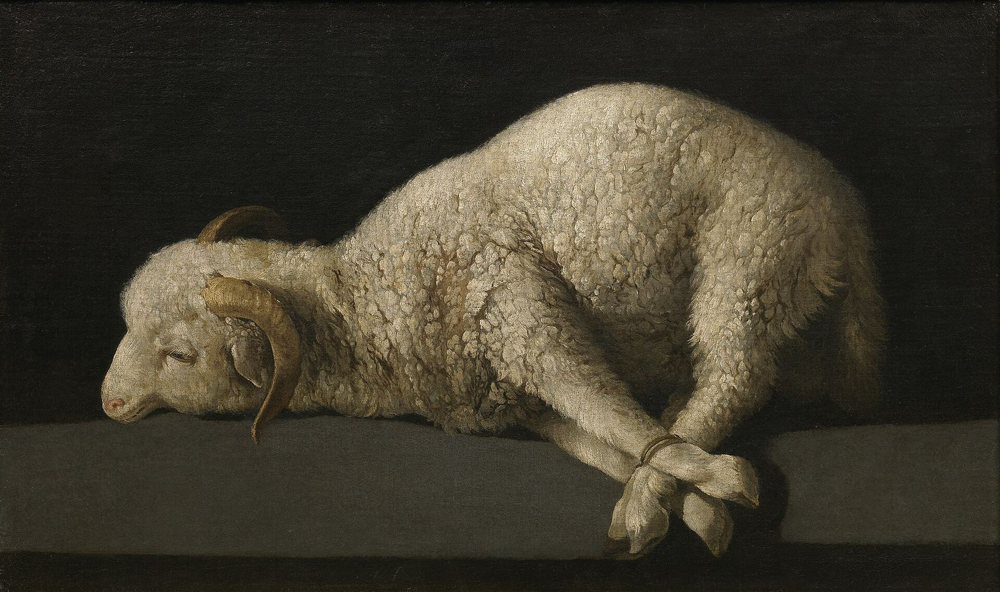

باريس
ثورباران في اللوفر: استعادية للرسام اللي مات سنة 1664


دليل معارض باريس لشهر أكتوبر 2026 بيذكر استعادية لفرانثيسكو دي ثورباران في اللوفر من 7 أكتوبر، بعنوان يغطي سنوات 1598–1664. الوصف المنشور بيتكلم عن تكليفات الأديرة الكبيرة، والبورتريه، والطبيعة الصامتة، وعن أثره لاحقًا على فنانين من الطليعة الفرنسية. التفاصيل دي من الدليل، وصفحة اللوفر هي اللي بتحسم قائمة الأعمال لو اختلفت الصياغة.
اللوحة اللي قدامك
Agnus Dei في برادو حمل ميرينو، عمره تقريبًا بين ثمانية واثني عشر شهر، لسه حي، ورجليه مربوطين. الخلفية غامقة، والموضوع واحد. الطريقة دي، هدوء من غير زينة كتير، هي اللي خلّت الطبيعة الصامتة عند ثورباران تتقرأ كمشهد ديني كمان. أبعاد الملف: ارتفاع 37.3 سم وعرض 62 سم. اللوحة اتشرت لمتحف برادو سنة 1986 من ماركيزة ديل سوكورو، حسب بيانات الملف.
ثورباران مات سنة 1664، فأعماله خارج مدة الحماية في البلدان اللي بتحسب حياة المؤلف زائد سبعين سنة أو أقل. عشان كده نقدر ننشر اللوحة مع اسمه. القدرة على النشر غير إن اللوحة معارة لباريس. مانكتبش «شاهد الحمل في اللوفر» إلا لو قائمة الإعارة قالت كده.
المصادر
تواريخ المعارض ممكن تتغير. راجع صفحة الجهة قبل الزيارة.